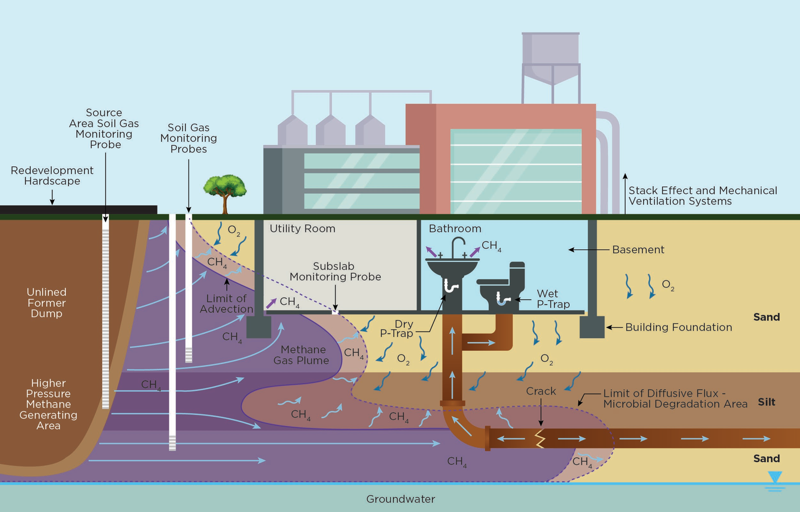
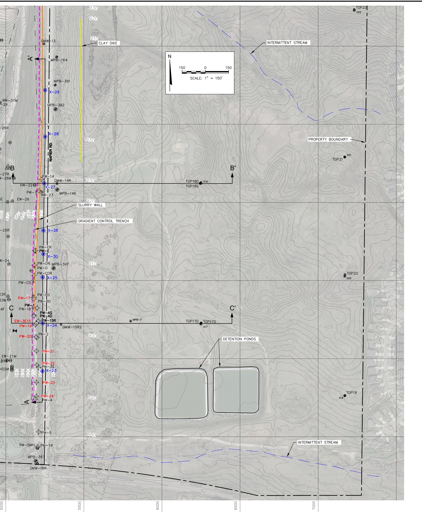
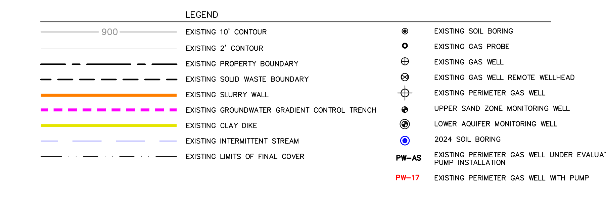
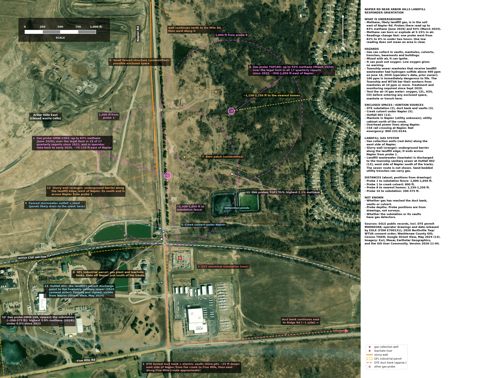

An explainer built from public records: the 2022 Consent Judgment, the operator’s quarterly probe reports filed with EGLE, EGLE’s compliance evaluations, the operator’s February 2025 probe layout as released by EGLE under the Freedom of Information Act, and Michigan’s solid-waste rules.
Published November 5, 2026. Updated November 6, 2026: added the First responder download.
Contents
For fire departments, utilities and anyone who needs the gas-probe information in one place. All three files are public records or built from them; print them as often as needed.
LEL stands for Lower Explosive Limit. Methane mixed with air can explode when methane makes up between about 5 percent and 15 percent of the mix. Below 5 percent there is too little methane to ignite; above about 15 percent there is too little oxygen. So 5 percent methane is methane’s LEL.
Gas-probe readings are usually reported as a percent of the LEL, not a percent of methane:
| Reading | Methane in the soil gas | Meaning |
|---|---|---|
| 0% LEL | 0% | none detected |
| 20% LEL | 1% | measurable methane, below the legal limit |
| 100% LEL | 5% | the explosive threshold, and Michigan’s legal limit at the facility property boundary (see section 2) |
| 1,000% LEL | 50% | ten times the threshold |
| 1,858% LEL | 92.9% | the highest Arbor Hills boundary-probe reading in the reports we hold (probe AHTGP18D, March 19, 2024) |
A reading far above 100% LEL does not mean that spot is more explosive. Pure landfill gas is too rich to burn without air. It means gas that is mostly methane, usually raw landfill gas, is sitting in the soil, and wherever that gas mixes with air, in a basement, a utility trench or a manhole, it passes through the explosive range.
Michigan’s solid-waste rules (Part 115 of the Natural Resources and Environmental Protection Act, Rule 433(1)(b), Mich Admin Code R 299.4433) require that methane “is not more than the lower explosive limit at or beyond the facility property boundary.” Rule 433(4)(a) adds that when methane above that limit is detected, the operator must “[i]mmediately take all necessary steps to ensure protection of human health and notify the director.”
The 2022 Consent Judgment between EGLE and Arbor Hills Landfill, Inc. (the link downloads the judgment from EGLE’s MiEnviro portal; Ingham County Circuit Court No. 2020-0593-CE, entered March 7, 2022) recites EGLE’s allegation that the landfill violated Rule 433(1)(b) “by failing to ensure that the concentration of methane gas is not more than the lower explosive limit at or beyond the facility property boundary.” Paragraph 5.12 of the judgment, titled “Lower Explosive Limit,” sets out the fix and the monitoring. Arbor Hills Landfill, Inc. “denies all allegations in the Complaint,” and the judgment states that its entry “is not an admission of liability with respect to any issue raised in the Complaint, nor is it an admission of any fact alleged therein.”
Landfill gas is roughly half methane and half carbon dioxide. It is made inside the waste and builds pressure. A gas collection system is supposed to pull it out through wells. When collection falls short, because wells are flooded or broken or vacuum is low, gas follows the easiest path out: up through the cover (surface emissions, which are measured by walking the surface with a meter) or sideways through permeable soil, such as sand and gravel seams, past the edge of the waste. The sideways path is subsurface migration. It is invisible at depth. Methane itself is odorless, though landfill gas can carry trace compounds, such as hydrogen sulfide, that are not. Boundary-probe monitoring exists to catch gas moving sideways before it reaches a structure.

Figure. How methane moves underground when gas pressure pushes it: from the waste, through sandy layers, past soil gas monitoring probes, and into a building’s basement or along a cracked utility pipe. Source: EGLE Remediation and Redevelopment Division, “Development on or Near Methane Generating Sources” (April 10, 2025), Figure A2.3, “Advection Dominated Methane Transport” (page A2-7).
A gas probe (also called a gas monitoring probe or methane probe) is not a sensor left running in the ground.1 It is a small monitoring well:
Nothing measures it full time. On each monitoring round,2 a technician connects a portable gas meter to the valve. The meter pulls gas up the pipe and reads methane, carbon dioxide and oxygen. The probe works like a straw into the soil at that depth.
What it is measuring. Soil is full of tiny spaces between grains, normally filled with ordinary air. A high reading means those spaces at the screen depth are filled with landfill gas instead. On June 25, 2026, probe AHMP15R23 read about 68 percent methane with 0 percent oxygen: the normal soil air there had been pushed out completely.
Where the gas comes from. The gas is not one trapped bubble. Buried waste keeps generating gas, which builds pressure and flows through the most permeable paths, often sand and gravel layers beneath tighter clay that acts like a lid. Readings that recur quarter after quarter, year after year, mean a continuous supply of gas, not one trapped pocket, which would have dissipated long ago. Next to a landfill the buried waste is the likely source; the operator’s 2021 borings between the waste and Napier Road found up to 65 percent methane (see section 5).
Why it matters. The flow continues until it finds an outlet: the ground surface, a basement or crawlspace, a sump, a utility vault, or the gravel bedding around buried pipes and cables, which can act as a preferential pathway for gas. A probe is the early warning that gas has reached, or passed, the facility property boundary underground.
Can 68 percent methane explode? Not where it sits: it is far above the 15 percent upper limit and has no oxygen. The hazard is dilution. If this gas leaks into an enclosed space and mixes with air, it passes through the 5 to 15 percent range, so an explosive mixture can form without warning. The accurate statement is “explosive-range gas could form if it collects in buildings or utility lines,” not “the ground could explode.” Gas this rich can also push the oxygen out of a confined space such as a manhole or vault. That matters because people cannot sense low oxygen: a utility worker who climbs into a vault filled with this gas can pass out within moments, before noticing anything is wrong. Both hazards arise where gas can collect in an enclosed space, such as a basement, a manhole or a vault: there it can form an explosive mixture, or leave too little oxygen to breathe. This is why confined-space safety rules require testing the air before anyone goes in.
Where. The trouble spot is probe GMW-15R2 (AHMP15R2 in the quarterly reports), just east of Napier Road, across the road from the closed Arbor Hills East landfill, almost directly across the road from where the slurry wall ends.4
June 1989: the slurry wall. Since June 1989, an underground wall of soil and clay has run along the north and east sides of the closed Arbor Hills East landfill. Its job is to keep groundwater and leachate in; its plan says nothing about gas.5 GMW-15R2 sits almost directly across Napier Road from where the wall ends.6 Whether gas is moving around the end of the wall is an open question for the operator and EGLE.
March 2021: the operator’s borings. The operator’s consultant drilled between the waste edge and Napier Road, near GMW-15R2, and found up to 65 percent methane.7
The 2021 fix. The operator proposed eight supplemental methane collector wells (PWT01 through PWT08) along the west side of Napier Road, tied to the existing gas header, to intercept the gas. The Consent Judgment made that plan mandatory (paragraph 5.12(A), see page 30).
2023, two years later: still far above the limit. In June 2023, AHMP15R2 read 77.6 percent methane (1,552% LEL) and AHTGP18D read 77.2 percent (1,544% LEL).8
EGLE’s reaction, in its October 10, 2023 compliance evaluation. An EGLE inspector wrote, “LEL’s continue in the >1000 I have never seen this high before and many others higher. CH4 75%.” Another EGLE staff member wrote, in the report’s July 31, 2023 entry, “Appears the methane exceedances beyond the border continue and what GFL is doing isn’t working,” and, in its May 2, 2023 entry three months earlier, that the Materials Management Division “really needs to review GFL’s plan on the methane exceedances beyond the border.” (EGLE Full Compliance Evaluation, Arbor Hills Landfill N2688, October 10, 2023, pages 7 and 14; the report lists entries newest first.)
The newest report we hold, April to June 2026 (filed July 30, 2026): still exceeding. The operator’s June 2026 probe report shows AHMP15R2 at 1,658% LEL (82.9 percent methane) on June 12, 2026, and 1,368% LEL (68.4 percent) on June 25, 2026. (Q2 2026 Consent Judgment quarterly report, Attachment 3; EGLE MiEnviro document 7045536706099143566, page 464.)
The pattern. Every one of the 17 quarterly reports we hold, April 2022 through June 2026, shows at least one boundary probe at or above the legal limit, 269 readings in all.9 Two probes account for about 90 percent of them: AHMP15R2, at the road, over the limit in 15 of the 17 reports, and AHTGP18D, about 950 feet east of it, over the limit in all 17. Readings swing from week to week, with some zero readings in between.
Until October 2026 the only probe drawing we had found in the public record showed one short stretch of Napier Road. On October 28, 2026, EGLE’s Materials Management Division released, under Freedom of Information Act request E700131, the operator’s consultant’s “Drilling Workplan Site Layout” (SCS Engineers for GFL, revised February 14, 2025, sheet 1 of 3). It is a layout, not a survey: positions below are read from its grid (1 inch = 150 feet on the original) and are good to about 25 feet. This sheet does not give probe depths; sheets 2 and 3 of this drawing, which were not released, may.

Figure. The operator’s land east of the landfill, from its consultant’s February 2025 layout, as released by EGLE under FOIA request E700131. Napier Road runs north to south at left, with the landfill’s slurry wall and gradient-control trench just west of it. GMW-13 and GMW-16R sit at the road; GMW-14R and GMW-15R2 (AHMP15R2) sit just east of it. TGP17D/S and TGP18D/S sit about 950 feet east of the road. TGP19 through TGP22 sit near the line the drawing labels “property boundary,” about 1,900 feet east of the road; that line is the operator’s ownership line, not the licensed landfill’s boundary; the licensed landfill ends at Napier Road. Blue symbols are 2024 soil borings; red labels are gas wells shown with pumps. The scale bar and north arrow (top) are copied from the same sheet at the map’s scale; grid lines are 500 feet apart.

Legend from the same sheet.
What the layout shows.
Methane migration under Part 115 Rule 433 is a solid-waste matter, handled by EGLE’s Materials Management Division (MMD).
The plans. The operator has sent MMD three plans that bear on methane at the boundary:
What the 2023 migration plan says. The plan is short: a cover letter, two pages from the operator’s 2022 Operations Plan, and a drawing.13 It says the probes will be checked quarterly and that, if a probe reads above 25% of the LEL, EGLE’s director will be notified. It mentions methane sensors and alarms only in buildings on the landfill property, and says nothing about land or buildings beyond it.
MMD’s 2023 review. In June 2023 MMD asked the operator for twelve items to review the plan, including five years of probe data, a map with property lines and nearby structures, and the probe construction logs; the operator sent them on August 8, 2023 and answered that it does not purge the probe casing before taking readings. MMD followed up on August 18, 2023 with a question about which probe matches which boring log. The records EGLE released end there; they include no reply to that question and nothing later.
The 2024 plan. EGLE’s Materials Management Division answered FOIA E700105 (October 12, 2026) that it has no records of reviewing the 2024 plan, so some Part 115 requirements that depend on an approved plan, including the minimum available vacuum standard, have not yet taken effect as permit conditions; the operator’s February 2025 layout does show pumps already installed in seven perimeter wells.
EGLE’s Air Quality Division (AQD) reviews the same Consent Judgment quarterly reports, which is why AQD staff flagged the problem in 2023 and wrote that MMD needed to review the operator’s plan. MMD also receives the reports directly: the operator’s July 30, 2026 cover letter for the April to June 2026 report copies MMD’s district supervisor (MiEnviro document 7045536706099143566).
EGLE’s October 12, 2026 answer to a public-records request (FOIA E700105) stated that no records exist of MMD’s review of the March 28, 2024 plan.
What EGLE’s records answer shows. Our FOIA request asked MMD for its records since January 1, 2023 “reviewing or responding to” the methane exceedances at these probes; EGLE said the records it released on October 28, 2026 “represent all information in EGLE’s possession responsive to your request.” Those records contain no notice to the director under Rule 433(4)(a), which requires the operator to “immediately take all necessary steps to ensure protection of human health and notify the director” when methane above the limit (100% of the LEL) is detected. The operator’s 2023 plan promises notice to the director at an even lower level, 25% of the LEL. If the operator sent any of those notices, they are not in the records MMD released. A second FOIA request, which EGLE granted on October 15, 2026, asks for “every notification submitted to EGLE, in any division, under Mich Admin Code R 299.4433(4)(a) or (4)(c) concerning methane above the lower explosive limit at any boundary gas monitoring probe” since October 30, 2020. We will update this article when the records arrive.
South of GMW-15R2, on the same side of Napier Road, is a new neighbor. DTE’s Nitro electrical substation (7480 Napier Road) sits on a three-acre parcel whose north edge is about 1,000 feet south of GMW-15R2 by our measurement; its underground electric duct bank and vaults run along Napier Road (DTE’s application for EGLE permit MI0060368, March 2024, Figure 1; the link downloads the application). No probe on the layout sits on the east side of Napier Road between GMW-15R2 and the substation. The probe nearest the substation, GMW-16R (AHMP016R), is on the landfill side of the road about 900 feet south of GMW-15R2; it has stayed at or below 8% LEL in the Consent Judgment reports (2022 to 2026); the operator’s earlier five years of data, released under FOIA E700131, show it above the limit once, at 118% LEL on February 1, 2019, under the prior owner, and as high as 86% LEL on March 3, 2021. Because the layout gives no probe depths, whether it watches the same soil layer as GMW-15R2 is not known. The layout itself ends about 1,100 feet south of GMW-15R2, just past the rail line; the substation is not labeled on it.

Figure. What is around the probes today: an orientation map made for local fire departments (version 2026-11-04). Probe positions come from the operator’s drawings, not surveys. The pink rings are 1,000 feet from GMW-15R2 (1) and TGP18D (8). Sources and imagery credits are on the map. The map also notes hazards beyond this article’s scope, such as the 2020 hydrogen sulfide readings in township sewer manholes, from the sources listed on it.
EGLE’s guidance, which is advisory and “does not contain any regulatory requirements,” describes what should happen when land near a methane source is developed. Its Remediation and Redevelopment Division’s “Development on or Near Methane Generating Sources” (approved April 10, 2025) says that “a maximum distance of 1,500 feet from known waste can be assumed as a starting point” for investigation, and that “if methane detections in soil gas above 25% of the LEL are found, the soil gas must be delineated to below 25% of the LEL.” Its non-residential land uses expressly include “utility companies,” and it says “utility corridors and trenches should be lined and/or sealed to reduce potential for methane migration into on-site structures and to off-site receptors.” GMW-15R2 read 82.9 percent methane on June 12, 2026, about 165 feet east of the waste. The waste itself runs south along Napier Road to a corner about 475 feet south of GMW-15R2. Measured from that corner, the substation parcel’s nearest edge is about 530 feet away, inside the 1,500-foot starting distance (Wayne County parcel boundaries and the operator’s 2021 drawing in Consent Judgment Appendix J, see page 177; our measurement, good to about 50 feet).
Nothing in the record shows methane at the substation; we have found no record that anyone has measured there. That leaves questions only the operator and EGLE can answer; they are listed in section 9.
We have found no rule that requires anyone to tell a neighbor what these probes read. Michigan’s one-call system locates buried utility lines and carries no soil-gas information; worker-safety rules require an employer to test the air in a trench deeper than 4 feet before workers enter it when a hazardous atmosphere exists or could reasonably be expected, and electric-utility rules require crews to test a vault’s air before entering it; and Rule 433(4)(a) names only the director as the person the operator must notify.
The probes to the east, nearest the homes, tell a different story. The four probes nearest the homes to the east, TGP19 through TGP22 on the operator’s ownership line, have never read above 20% LEL in the reports we hold: a high of 20% LEL (1 percent methane) at AHETGP21 in January 2023, 6% at AHETGP22 (June 2023), 2% at AHETGP19, and 0.2% at AHETGP20 (2% in the operator’s 2021 data released under FOIA). Measurable methane has been detected at that line in the soil; the legal limit has not been exceeded there. EGLE’s guidance uses 25% of the LEL as the line below which soil gas is considered delineated. To the east, the probes meet it: one reading of 20% LEL, the rest at 6% or less. To the south, toward the substation, no probe on the east side of the road shows it either way.
Open questions
Still unknown (not found in public records or FOIA releases)
boundary-probe-readings-one-per-probe-date-17-reports-2026-10-24-v2-all-gases.csv.Corrections policy: see the site’s Corrections page. Every number above can be checked against the cited record; if you find one that is wrong, write to the address on the About page and it will be corrected and the correction dated.
Not the air monitors. Probes are different from the perimeter air monitors (MS-1 through MS-6) that measure methane and hydrogen sulfide in the outdoor air along the fence line. Probes measure gas underground; the air monitors measure gas in the air.↩︎
Monitoring schedule. Under paragraph 5.12(C) of the Consent Judgment (see page 31), probes AHMP0014/14R, AHMP015R/15R2, AHMP016R, AHMP28R2 and AHMP0013 are monitored weekly until each has a full year with no exceedance of Rule 433(1)(b), after which that probe reverts to quarterly; the remaining probes (the roster has 31 probes in all) are monitored quarterly, and any probe that exceeds during quarterly monitoring goes back to weekly. Under paragraph 5.12(D), the operator reports the results for all probes to EGLE within 30 days after each calendar quarter, with a description of any actions taken on exceedances, as Attachment 3 of its quarterly Consent Judgment report.↩︎
Probe names. Paired probes ending in S and D (for example AHTGP18S and AHTGP18D) are shallow and deep screens at the same spot, used to see which soil layer the gas is travelling in. The operator’s layout uses shorter names for the same probes: GMW-15R2 is AHMP15R2 in the quarterly reports, TGP18D is AHTGP18D, and TGP19 through TGP22 are AHETGP19 through AHETGP22.↩︎
Where, in more detail. A second probe, TGP18D (AHTGP18D), about 950 feet east of the road, also reads far above the limit. The Consent Judgment defines Arbor Hills East as “the portion of the Landfill that is a 131-acre unlined, closed Type II sanitary landfill located at Napier and 6 Mile Road, in Salem Township” (Consent Judgment, Definitions, section IV.D, see page 6). Paragraph 5.12(A) is written “to address subsurface methane detection exceedances east of Napier Road.”↩︎
The slurry wall. A slurry wall is a narrow trench dug down to a layer of clay and filled with a mix of soil and bentonite clay, which water passes through only very slowly. The Arbor Hills wall is a soil-bentonite wall connected to the clay layer beneath the landfill. Together with pumping wells, it keeps groundwater flowing inward, toward the landfill, so that leachate (the liquid that drains out of waste) stays in. The plan describes the wall only in groundwater terms. Source: Golder Associates for the operator, Hydrogeologic Monitoring Plan, revised September 2018, section 7.0.↩︎
The wall’s end. On the operator’s February 2025 layout (see section 6), the wall runs south along the west side of Napier Road and ends near perimeter gas well PW-18; the gradient-control trench beside it continues south past that point. GMW-15R2 is about 80 feet farther south and about 170 feet east of the wall’s end. The distances are our measurement from the layout, good to about 25 feet; the layout notes that the wall’s position was digitized from a 2020 site plan.↩︎
The March 2021 borings. Eleven exploration borings: PWEX01 through PWEX07 and PWEX09 through PWEX12 (the submittal lists no PWEX08). The highest: 60.0 percent (PWEX03), 65.0 percent (PWEX07), 65.0 percent (PWEX09), 33.0 percent (PWEX10) and 38.0 percent (PWEX11). The drawing in the same submittal shows one existing perimeter methane probe, GMW15R2, on the east side of Napier Road, where the 2025 layout also places it. Source: Consent Judgment Appendix J (see page 177): the operator’s June 11, 2021 submittal to EGLE’s Materials Management Division, Table 1 and Drawing 1.↩︎
April to June 2023. Both readings are from June 13, 2023. At 8 of the 13 weekly checks that quarter, one or both of those probes read at or above 1,000% LEL; most other readings were at or near zero, except AHMP15R2 at 574% LEL on May 22 and 845% on May 30, 2023. Source: the operator’s Q2 2023 Consent Judgment quarterly report, Attachment 3 (EGLE MiEnviro document -3651238607132417036; the link downloads the report).↩︎
How the readings are counted. The limit is 100% LEL, which is 5 percent methane, measured at the licensed landfill’s edge at Napier Road. Each probe is counted once per monitoring date. Three other probes (AHMP28R2, AHMP012R and AHMP0011) account for the remaining exceedances, at times between April 2022 and March 2025. An example quarter: in October to December 2025, AHTGP18D read above the limit five times, up to 81.1 percent methane (1,622% LEL) on December 19, 2025 (Q4 2025 Consent Judgment quarterly report; EGLE MiEnviro document -6434168316378583072).↩︎
Which boundary the rule means. Rule 433(1)(b) sets its limit “at or beyond the facility property boundary.” In our reading, that phrase means the edge of the licensed landfill, not everything the operator owns and not the edge of the waste. Under the Part 115 rules, “facility” means a solid waste disposal area (R 299.4103), which R 299.4106a(k) defines as “the disposal area that is approved in a construction permit or engineering plans approved by the solid waste control agency before January 11, 1979, and all contiguous property that is owned by the same person which has been approved for the disposal of solid waste in other construction permits.” EGLE’s Operating License 9709, which licenses “this solid waste disposal area (Facility),” describes it as 337.24 acres in Section 13 of Salem Township, Washtenaw County; the east line of Section 13 is Napier Road, the county line (county parcel maps). The Consent Judgment’s site map (Appendix A, Figure 1, see page 64) draws the landfill’s property limit along Napier Road and labels the operator’s land north of Six Mile Road and south of the railroad separately as “property owned by GFL”; it does not show the land east of Napier. On that reading, the compliance line is the licensed landfill’s edge at Napier Road, and land the operator owns east of the road is not part of the licensed facility. GMW-15R2, on the far side of the road, and TGP18D, about 950 feet east of it, are both beyond that line. The Consent Judgment, which the operator signed, is consistent with that reading: it was written “to address subsurface methane detection exceedances east of Napier Road” (paragraph 5.12(A)) and requires weekly monitoring of AHMP015R/15R2 until that probe “achieves one year with no methane concentration exceedances of Rule 433(1)(b)” (paragraph 5.12(C)). The operator denied the allegations in EGLE’s complaint, and the judgment is not an admission.↩︎
Perimeter gas wells. Shown with pumps: PW-17 and PW-19 through PW-24. Two others, PW-AS and PW-AD, are marked “under evaluation for pump installation.”↩︎
Borings and cross-sections. Eight soil borings drilled in 2024 (X-23 through X-30) and six earlier borings (X-17 through X-22, drilled in 2020 at the TGP17 to TGP22 sites). Cross-section A-A’ runs north to south along Napier Road; B-B’ starts on the landfill side, west of the slurry wall, and runs east across Napier Road past TGP18D/S; C-C’ does the same past TGP17D/S. The drawing’s CAD file is named “Migration Eval Xsec,” which suggests it was prepared for a migration evaluation; we have not found any such evaluation in the public record.↩︎
The 2023 plan. EGLE released it on October 28, 2026, under FOIA request E700131. It consists of the operator’s March 29, 2023 cover letter, which says the submittal “constitutes the required Gas Migration Monitoring Plan pursuant to Section 11512b(3),” two pages of the operator’s March 2022 Operations Plan, incorporated by reference, and a probe-location drawing. Those pages say the probes “will be monitored quarterly for methane content” and that “if methane is detected in any of the probes at a level greater than 25% of the LEL, the EGLE director will be notified and provisions of Rule 433 (4) will be implemented.” The Consent Judgment separately requires weekly readings at five probes (see the monitoring-schedule note). Source: Landfill Gas Migration Monitoring Plan submittal, March 29, 2023.↩︎